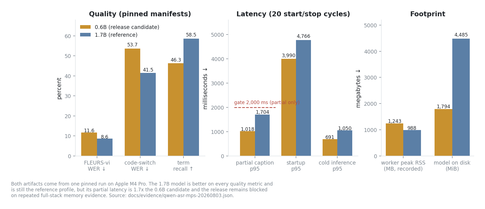
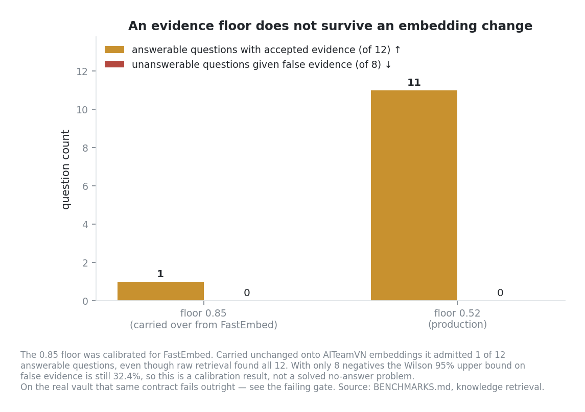
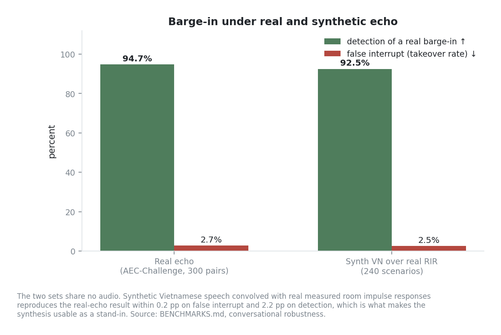

System teaser
Abstract
SoCa is a Vietnamese voice agent designed around a local audio path and an explicitly selected local or remote language model. Its runtime separates microphone input, VAD/AEC, ASR, a controlled workflow, tools and evidence-aware knowledge or memory, the selected LLM, and TTS playback. The knowledge path combines sparse retrieval with dense representations and keeps evidence, citations, and terminal outcomes observable instead of turning a weak match into a confident answer. Evaluation uses public speech and retrieval datasets together with private release manifests, real echo recordings, and reviewed conversational trajectories. The page reports what was measured, what remains blocked, and which boundaries are deliberate; it does not present a paper or claim general voice-assistant capability.
Selected measurements
Three views of the release evidence: ASR disposition, retrieval evidence floors, and full-duplex interruption behavior.



Results
Values below are copied from the repository benchmark record. Dataset revisions, commands, hardware, and unresolved gates remain in BENCHMARKS.md.
| Metric | Value | n | Dataset / measured | Date |
|---|---|---|---|---|
| Qwen release FLEURS-vi WER | 8.59% | 30 utterances | FLEURS vi_vn production paired run | 2026-08-02 |
| Qwen release cold inference p95 | 691 ms | release matrix | qwen-release on Apple Silicon | 2026-08-02 |
| Retrieval Recall@5 | 0.9161 | 1,000 queries | TVPL · fusion selection | 2026-07-30 |
| Retrieval p95 per query | 71.019 ms | 1,000 queries | TVPL · production fusion candidate | 2026-07-30 |
| Unanswerable false evidence | 0 / 8 | 20 questions | XQuAD grounding split | 2026-07-31 |
| Barge-in false interrupt | 2.7% | 300 pairs | AEC-Challenge real echo | 2026-07-29 |
| Barge-in detection | 94.7% | 300 pairs | AEC-Challenge real echo | 2026-07-29 |
| Turn-taking premature close | 18.3% | 120 timelines | Vietnamese turn-taking benchmark | 2026-07-29 |
Full demo
The final recording is intentionally not fabricated. This short placeholder keeps the page structure reviewable until a real private-vault run is recorded and verified.
Real demo video pending · replace this asset before public launch
Limitations
- Goal-level routing can still choose the wrong capability tier, so retrieval is not treated as proof that an end-to-end answer is correct; the real-vault false-evidence gate remains visible in the benchmark record.
- Local audio qualification is currently centered on Apple Silicon; ARM/Linux and a complete hardware-microphone release run are not claimed here.
- ASR confidence calibration is profile-specific. A model without its own calibration is not silently substituted with another model.
- The production tool surface is intentionally small. Device control, weather, and broad external actions are outside this release page.
BibTeX
@software{vo2026soca,
author = {Võ Minh Thịnh},
title = {SoCa: A Vietnamese Voice Agent with Evidence-Aware Retrieval},
year = {2026},
url = {https://github.com/finalflash159/shrike-7}
}